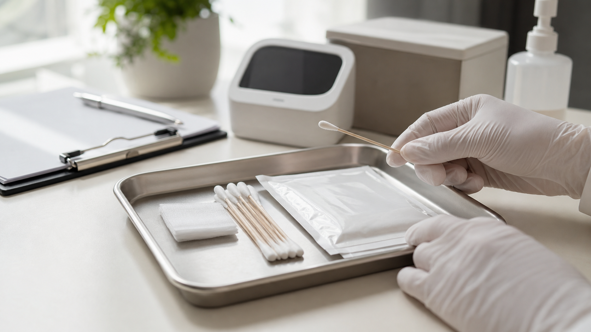

심리적 원인
심인성 조루라고 하며 성관계에 대한 경험부족, 불규칙한 성생활, 관계전의 압박감이나 불안감, 각종 스트레스 등으로 인해 조루증상이 나타나는 경우입니다.
또한, 과거 성경험이 트라우마로 작용하여 나타나는 조루증이나 상대방과 서로 성행위 기대치의 불균형이 심할 경우 겪게 되는 자괴감 등이 원인으로 작용하기도 합니다.
Premature Ejaculation Center
원인과 증상을 함께 살펴 개인에게 맞는 치료 방향을 찾고, 관계 만족도 회복을 돕는 조루센터 진료를 안내합니다.
What Is It?
조루증은 남성의 성기능 장애 중에서도 가장 흔하게 나타나는 사정장애입니다. 사정은 본인의 의지와는 상관없이 너무 빠르게 하거나, 조절하기 힘든 상태를 말합니다.
성관계 시 제대로 된 만족감을 얻지 못한 채 빠르게 극감에 도달하는 경우가 많습니다. 조루는 전 연령층에서 다양하게 나타나며, 삽입 전이나 삽입 직후에 사정하는 경우도 있습니다.
질 내 삽입 후 60초 이내에 사정하거나, 삽입 후 피스톤 운동 횟수가 15회 이내에 사정하는 경우에는 조루증을 의심해 보아야 합니다.
Cause & Diagnosis
심인성 조루라고 하며 성관계에 대한 경험부족, 불규칙한 성생활, 관계전의 압박감이나 불안감, 각종 스트레스 등으로 인해 조루증상이 나타나는 경우입니다.
또한, 과거 성경험이 트라우마로 작용하여 나타나는 조루증이나 상대방과 서로 성행위 기대치의 불균형이 심할 경우 겪게 되는 자괴감 등이 원인으로 작용하기도 합니다.

과민성 원인과민성 조루는 조루증상을 호소하는 남성들 중 60~70%를 차지합니다. 귀두나 음경, 성기 주변에 분포한 말초신경이 남들보다 민감해 성적자극에 빠르게 반응하여 사정 조절이 어렵고 의도치 않게 사정하게 되는 경우 입니다.
조루의 진단은 일시적인 현상인지 증세로 볼 것인지 판단해야 하며 같은 여성과의 관계에서라도 신체적, 감성적 조건과 주변 환경에 따른 차이들이 작용할 가능성이 있기 때문에 다양한 조건과 상황을 통한 면밀한 평가가 필요합니다.
기본적으로 문진을 통한 방법이 가장 많이 이용되는데 과거 병력, 자위행위와 성행위 시에 차이가 있는지, 복용 약물 여부, 발기력이나 강직도, 신경학적 질환 등을 확인합니다.
조루로 진단이 되더라도 대부분 복합적인 원인에 의한 것으로, 다양한 치료법을 함께 병행하는 것이 좋습니다. 행동요법이나 민간요법을 임의로 판단하여 사용하는 것은 오히려 증세를 악화시킬 수 있기 때문에 반드시 전문가의 진단과 처방을 따르시는 게 좋습니다.
Special Good Man
안전을 최우선으로 생각하며
개인의 상태와 상황에 맞춘 프라이빗 진료를 통해
처음 상담부터 수술 후 관리까지 책임 있게 함께하겠습니다